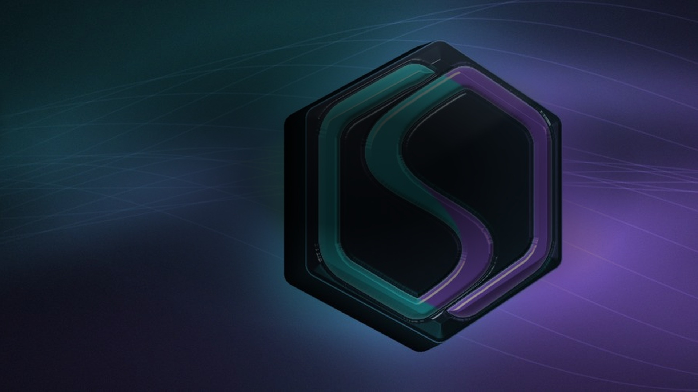

Size changes the price
A quote for a small trade cannot value an entire collateral position.
Risk infrastructure / Solana
We price recoverable collateral.
Executable Collateral Value estimates the USDC recoverable from tokenized equities under liquidation conditions. Built for lending venues, vaults and curators.
Open-source engine · Published on Solana devnet

A fixed loan-to-value ratio assumes the collateral can be sold near its mark. The buyer may not be there.
For tokenized equities, liquidation size, DEX depth, slippage and market-hours mismatch can change the outcome. Lending limits need to account for the executable exit.
A quote for a small trade cannot value an entire collateral position.
The same position can have a different exit while lending parameters stay fixed.
Origination needs a buffer. An existing position needs an executable mark.
Kamino API + Jupiter quotes.
Nine xStocks. One dated view of liquidity.
Allowed debt at full deposit caps
$34.8MEstimated on-chain exit proceeds
$7.8Mallowed debt /
estimated exit proceeds
Pitch-reported snapshot, not live data or realized sale proceeds. Full-cap scenario; this is not the current outstanding debt. Source: Warsaw pitch, slide 4 ↗
Asset-level ratios use today's deposits, not full deposit caps.
HOODx is a lower bound: some large trade sizes were unquoted. Jupiter quotes estimate an on-chain exit; they do not include every possible CEX or off-chain buyer. Raw quote ladders are not included in this repository.
At the measured snapshot, borrowers had buffers.
GOOGLx still showed liquidation stress.
Estimated liquidator results worsen as price falls. The same-block exit is only one route to recovery.
On-chain read: 27 Sep 2026. Jupiter quote snapshot: 26 Sep 2026. Pitch assumptions: simultaneous xStocks shocks, liquidation to max LTV, 5% bonus. These are modeled liquidator results, not realized protocol losses. Source: slide 5 ↗
NVDAx profitable exit capacity increased ~33% across the three observations.
Weekend depth was higher in this sample. A closed underlying market does not automatically mean less liquidity. The measurable question is how much can exit now.
Jupiter NVDAx → USDC, 19 sizes. Profitability assumes a 5% liquidation bonus. The pitch describes the period as ~48 hours. Source: slide 6 ↗
CAPACITY / USD MILLIONS
Same −25% shock
Liquidator P&L · 55% LTV
Executable Collateral Value translates liquidity conditions into proposed borrowing limits and risk controls.
Position size, Jupiter route depth, price impact, market session and volatility.
Reads the quote, checks freshness and enforces its own borrowing policy.
max_borrowProposed maximum new debt
collateral_capProposed collateral limit
liquidation_routeIdentified exit route
risk_premiumModel risk spread
borrow_disabledGate for new borrowing
It does not set existing collateral to zero. The executable sale value remains the mark; session and volatility buffers affect origination. The engine also returns a diagnostic breaker_reason.
Change the asset, position size, session and depth. Explore the value waterfall, run weekend stress and inspect the synthetic backtest.
Uses the repository's ECV engine and deterministic offline curve. Live Jupiter quoting requires the local API server.
The dashboard runs entirely in your browser. Prices and liquidity are synthetic inputs, not live market quotes. Default model priors; no fitted calibration artifact is bundled. Original dashboard source ↗
Recorded snapshot + stress sandbox, slide 8: TSLAx, $100,000 position; ECV $84,358; safe max borrow $58,684; Kamino LTV amount $55,000. WARNING reflected USDC reserve utilization at the 90% rate kink.
This recorded UI is a different example from the repository dashboard above. The current public repository does not contain that TSLAx sandbox or its utilization warning logic. These pitch values are not a live calculation.
Inspect the pitch record ↗Synthetic tail stress: a 22% weekend gap with a thin book. Reproduced from the public repository's default parameters.
Fixed 70% LTV / bad debt
$5.34MECV / bad debt
$0ECV / new loans refused
369 / 369In this tail scenario, ECV refuses every new loan. Zero bad debt comes with zero new credit.
Generated 110-day hourly series, seed 7, default parameters. The reproduced base scenario supplies ~80% of fixed-LTV credit. This is a model exercise, not historical validation, mainnet performance or a guarantee.
Slide 9 reports ~$3.98M fixed-LTV bad debt, $0 ECV bad debt and 369 refusals, with ~100% base credit and ~27% across six scenarios. A clean run of the public repository produces $5,336,023 fixed-LTV tail bad debt and ~80% base credit. The exact pitch calibration artifact is absent, so this page leads with the reproducible default run and preserves the discrepancy here.
Method limitations: scenarios apply stress across the full window. The current engine declares maturity and execution-lag settings but does not apply delayed execution or scheduled repayments in its loop. These results should not be described as a validated simulation of those features.
Inspect the engine ↗The Anchor program publishes the ECV outputs to a per-mint record on Solana devnet.
The Rust poster supports scheduled reposting. Today, a single authorized signer supplies the quote. Integrators check freshness and enforce borrowing limits.
5nsdYoeBK9TU3fqeutenakSiiyP5w2y8T6MzBRY5cEucoffline:synthetic-curveECV engine, breaker, Anchor publication and periodic Rust posting.
Verifiable inputs, multiple signers, reference vault and borrow gate.
Devnet proof of publication. No mainnet deployment or on-chain enforcement claimed.
xStocks collateral and Jupiter routes give ECV a concrete market to measure. The integration target is the venue that originates the loan.
Target architecture, not a claim of a commercial partnership or a deployed Kamino integration.
Initial customer: a Solana lending venue, vault or curator integrating tokenized equities.
Risk management is an established category. Our focus is position-level exit liquidity for xStocks and composable ECV quotes that a venue can consume.
Risk management and risk oracles.
Explore Chaos Labs ↗Vault curation and risk management.
Explore Gauntlet ↗Specialized liquidity data, position risk and ECV quotes. A potential data supplier to broader risk platforms.
Positioning follows the Warsaw pitch, slide 12. Larger providers can enter this market. Named organizations are market references, not customers or partners.
Proposed models to validate with venues.
No revenue or signed customers claimed.
Building at the intersection of tokenized assets,
financial infrastructure and DeFi.
CEO, Founder &
Product Manager
Legal, Tax & Regulatory
MiCA
CTO & DeFi Architect Engineer
Anchor program + Rust poster
Rust · devnet deployment
Quant markets · investiatech ↗
Staff-level COBOL / mainframe. 20 years in core financial infrastructure, Scandinavia.
Rust / Anchor
Frontend
Names, roles and original portraits: Warsaw pitch, slide 14. Adam Książkiewicz is represented by initials in the source deck.
Inspect the engine. Explore the evidence. Verify the devnet record.